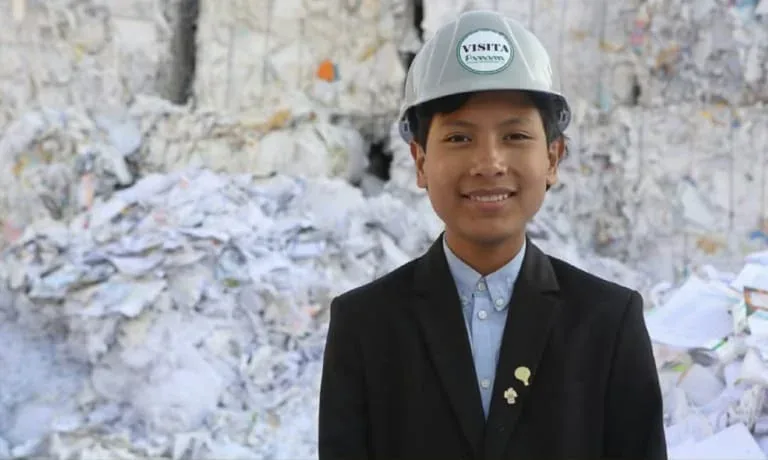

Menino de 7 anos cria banco para crianças
Aos 7 anos, José Adolfo Quisocala uniu renda e sustentabilidade: ao ver o lixo acumulado nas ruas de sua cidade, criou um banco onde crianças trocam materiais recicláveis por dinheiro e aprendem a poupar.
Ler curiosidade →